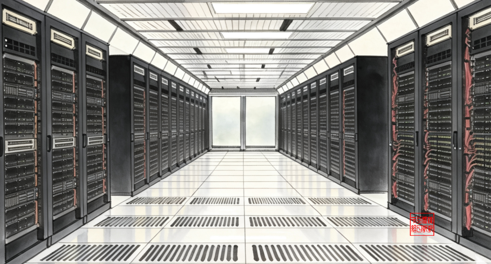

一、SST是什么：技术本质与产业定位
1.定义与本质：
SST以电力电子变换（AC/DC→高频DC/DC→DC/AC/DC）替代传统工频变压器电磁感应，实现主动电压/电能质量管理与双向潮流，是 “半导体替代电磁”的范式迁移。
2.产业定位：
-
NVIDIA在2025年OCP全球峰会800V DC白皮书中，将SST定位为AIDC终极供电方案之一，实现中压AC→800V DC高效、紧凑、可控转换。
-
华为2026年5月15日东莞全球AIDC产业论坛发布“源网荷储AIDC战略”，提出Watt/Heat/Bit+建设模式“3+1”重构，将SST作为Watt重构长路径终点——从电网友好UPS+构网储能的“MIMO供电架构”，逐步演进至以SST为核心的融合构网型能源路由器。
3.技术与经济对比（vs传统工频变压器+多级供电）：
-
转换级数：传统4–5级（中压变→UPS→HVDC/配电→PSU等）；SST缩至2级左右。
-
端到端效率：传统约80%–85%；SST提升至97%–98%+（随拓扑/负载略有差异）。
-
体积/重量：工频体积大、重量重；SST频率提升至20–100kHz，MFT阵列体积/重量降至传统1/3–1/5（1MVA案例：SST约0.4m³/0.6t vs传统约1–1.2m³/1.8–2t）。
-
响应与可控性：传统秒级；SST毫秒级，支持双向功率流动与电能质量治理。
-
铜材用量：大幅减少，符合绿色低碳趋势。
-
路线分裂风险：±400V与800V若长期无法统一，将导致标准碎片化、延缓行业渗透。
-
MTBF与可靠性短板：当前SST的MTBF偏低，需5年以上现场运行数据建立市场信任。
-
NVIDIA生态缺席：华为未加入800V联盟，短期或被排除在部分认证体系之外，但国内市场仍有自主空间。
-
政策与兑现节奏：节能变压器政策口径宽于SST，对SST直接拉动强度需动态评估。
二、从三个视角看待SST技术的未来发展
-
产业视角：SST技术成熟度约60%，瓶颈在MTBF与成本；2026年适合产品验证与试点，2028年可规模部署（前提：MTBF显著提升、成本回落）
-
技术视角：SST响应从秒级→毫秒级，运维体系需从传统电气转向电力电子技能；±400V在运维安全与培训成本上更友好
-
数据视角：决策核心指标（MTBF、模块效率、成本倍率、SiC BOM占比、渗透率、市场规模、天岳份额、国产化率）已基本可量化
华为国内AIDC主推±400V高压直流（兼容336V存量、平滑演进），海外与高端场景储备800V技术，形成内外双轨、滚动迭代路径，是对交付周期、存量兼容与安全运维的系统性权衡，而非妥协，未来整机环节利润与话语权将集中于具备全栈电力电子+渠道+标准能力的系统集成商
三：最后还是一句话总结
华为节奏落后台达 1–2 年，打法不同：华为至今未发布 SST 成品 / 原型机，2026—2028 年明确暂缓成品、攻坚核心技术；中期引入第三方试点、再自研落地；远期外溢至全场景。台达已出货、获谷歌大单，走产品与交付路线；华为走生态与标准定义路线，不在同一维度竞争。